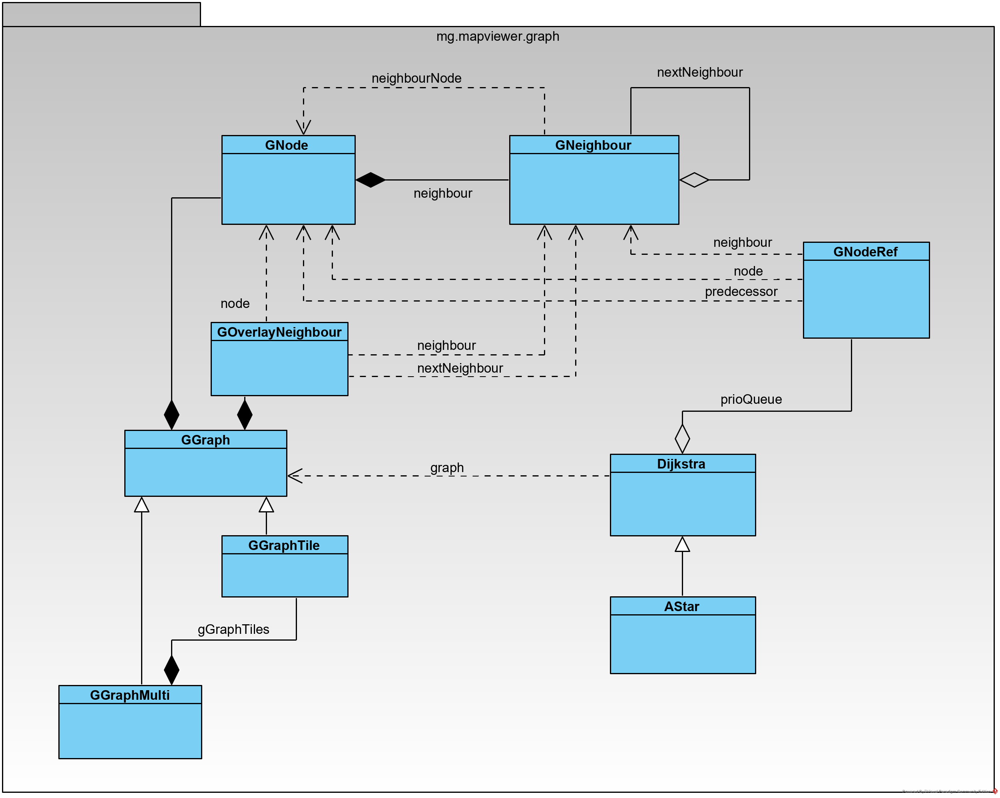

See: Description
| Class | Description |
|---|---|
| ApproachModel |
An Approach is a model object that represents a close part of a graph.
|
| AStar |
Implementation of the AStar routing algorithm.
|
| Dijkstra |
Implementation of the Dijkstra algorithm.
|
| GGraph |
A basic graph implementation based on GNode and GNeighbour.
|
| GGraphMulti |
Realisation of a graph based on multiple tiles (GGraphTile) objects.
|
| GGraphTile |
Represents the GGraph object for a particular tile (in terms of Mapsforge).
|
| GNeighbour |
This class is the basis for the neighbour relationship in a graph.
|
| GNode |
This class is the basis for a node in a graph.
|
| GNodeRef |
Keeps references on nodes and node relationships including meta data.
|
| GOverlayNeighbour |
Overlay neighbours are used to model extension in a graph keeping the original graph untouched.
|
This package contains all classes to model a graph and to execute routing algorithms (Dijkstra, AStar) on it.
